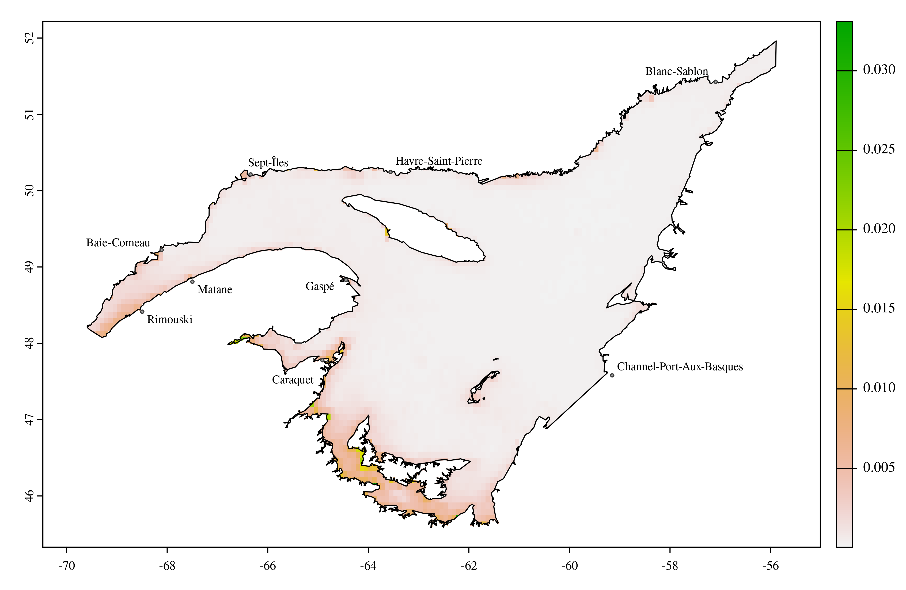

Concentration de calcite dissous dans les eaux de surface
Source: Assis J, Tyberghein L, Bosch S, Heroen V, Serrão E, De Clerck O, Tittensor D (2018). “Bio‐ORACLE v2.0: Extending marine data layers for bioclimatic modelling.” Global Ecology and Biogeography, 27(3), 277-284. doi:10.1111/geb.12693
Résolution spatiale originale: 5 minutes d’arc
Étendue temporelle: 2000-2014
